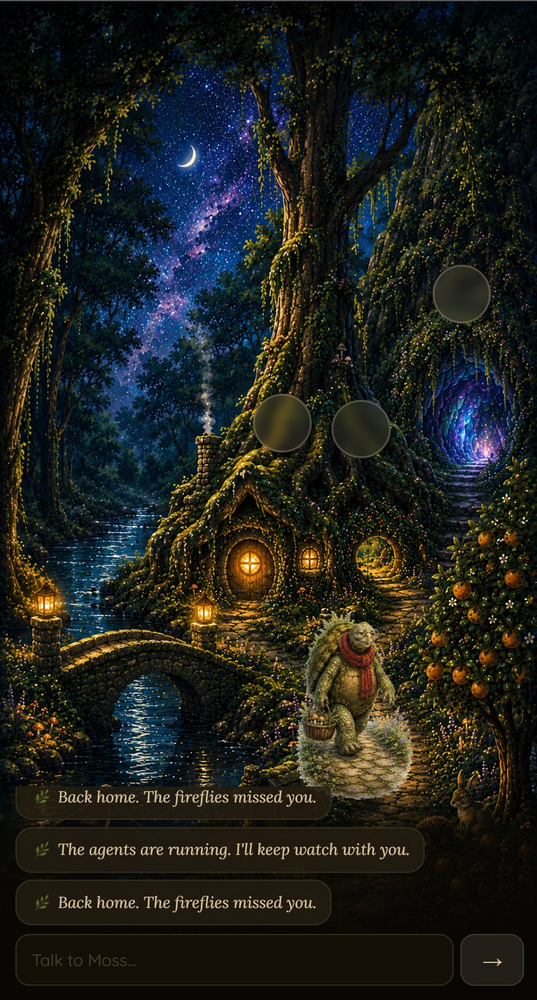
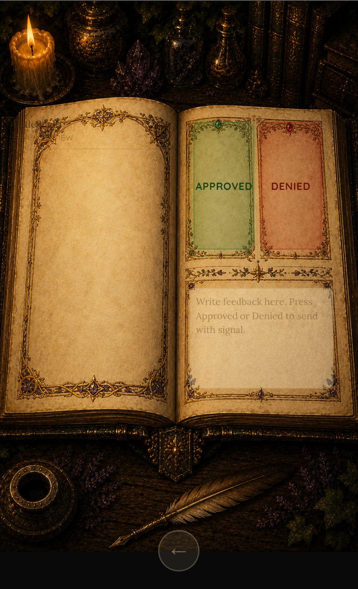

A self-hosted AI orchestration platform where agent teams do the work and a human makes every decision that matters — designed and built end-to-end by one person, with Claude.
SBAS runs on a small Linux server I administer: coordinated teams of Claude-powered agents that research topics in parallel, synthesize findings with citations, and propose actions — every consequential one of which waits for my explicit approval, delivered from a review interface on my phone. The stack is deliberately boring and ownable: open workflow automation (n8n), PostgreSQL, and Claude.
"Self-bootstrapping" is the design goal: every decision, correction, and execution record the system produces is captured, so each version of the system helps build the next one.
Why I built it
I started with two questions. The first was ambitious: how much can one person build with Claude and modern tooling? The second turned out to be the real project: what does it take to make AI output trustworthy enough to act on?
Anyone can wire agents together. Getting an honest system is the hard part — knowing where a claim came from, catching the model when it's ungrounded, and knowing whether the pipeline actually did what it says it did. Most of SBAS is machinery for exactly that.
How it works, in plain language
Three rules organize everything. One way in: anything that changes the system — recording an approval, submitting a job, writing to memory — goes through a single set of cryptographically signed command endpoints. One way to look: everything else is read-only; any interface can see the same ground truth but can't alter it. One place to decide: every consequential action funnels to a human approval rail, where I approve, deny (which always means "revise," with my written reasoning attached), or defer. My reasoning on each decision is captured, so over time the system learns what my judgment looks like — and earns automation instead of assuming it.
The deeper design bet: anything that can run as fixed, verifiable logic does. The model is handed only the steps that genuinely need judgment, and each of those is fenced by a checkpoint. A deterministic step can't confabulate, and it can be audited from records.
What's running today
Multi-agent research pipelines — agent teams research in parallel batches; every report is tagged to its specific run, so a synthesis can only draw on its intended sources
Async job system — submit, process, and poll workflows with monitoring and watchdogs; stalled jobs are detected and reaped automatically
Capture quality gate — automated grounding checks that reject unsupported content loudly, before it can enter the knowledge base
Truthful execution reporting — system status comes from execution records, never from an agent's own account of what it did
Mobile review interface — an approval "book" on my phone: pending items by category, full-page review, approve/deny/defer with my reasoning captured on every verdict

The front door. Moss, the system’s companion interface, with a live connection to the backend — approachable on purpose. The character is the UI; the machinery is underneath.

The review book. Where decisions enter the system: approve or deny, with my written reasoning captured on every verdict. Deny always means revise.
The bug that taught me the most
Field report
My worst failure wasn't a hallucination. A single structured field was silently dropped between two workflow components — no error, no warning — and for days, every research synthesis quietly blended documents from unrelated batches. The model did its job perfectly; the plumbing lied.
What caught it wasn't the model admitting fault (it can't — it didn't know). It was discipline: run a real case, read the execution records, trust nothing's self-report. The fix became doctrine, not a patch: cross-batch selection is now a deterministic step the model can't influence, every interface between components is proven at build time, and the contaminated outputs were formally superseded — kept as evidence, never as inputs.
The lesson I'd carry into any organization: when an AI system fails, look at the pipes before you blame the model — and build so that failures are loud.
Designed and in build
The current build phase is the epistemic core — a trust lifecycle for facts. Every claim the system captures gets a tier: unverified on arrival, mechanically verified when automated scoring clears it, human-verified only through my review — no automatic path to that tier exists — and time-tested after surviving repeated downstream use. Promotion between tiers is gated, confidence scores are calibrated against observed accuracy rather than taken at the model's word, and every state change lands in an append-only, hash-chained event ledger, so the system's history can't be silently rewritten — not even by me. In parallel, the last interface surfaces are being migrated onto the signed command plane, with the review app served from the system's own server and its credentials held in device secure storage rather than page source.
Design principles
Never trust self-reports
Agents are audited against execution records, the way you'd audit any process. What the system says it did and what it did are checked independently.
Deterministic by default
Fixed logic wherever possible; model judgment only where genuinely needed, and always behind a checkpoint. Deterministic steps can't confabulate.
Failures are loud
A gate that fires silently is worse than no gate. Rejections, escalations, and anomalies surface immediately and terminate at a human decision — never in a void.
Human judgment is the scarce resource
The review system budgets my attention — capped decisions per session, deferral without penalty — so approvals stay real judgments instead of a rubber stamp.
Ownership, not dependence
A copy of the system handed to someone else would run entirely under their control, with their own credentials. Nothing routes back to me.
Verify, then trust — then keep verifying
Automation is earned per category, by measured agreement with human review — and revoked automatically the moment quality slips.
How Claude fits
Claude is both the engine inside the system and the tool I built it with. Every agent in SBAS runs on Claude; and the architecture research, design reviews, debugging, and drafting behind SBAS were all done with Claude, daily — prompts iterated when the first answer fell short, outputs verified before they were trusted. SBAS is my working answer to what responsible, verified AI automation looks like at individual scale — and building it is how I use AI every day.